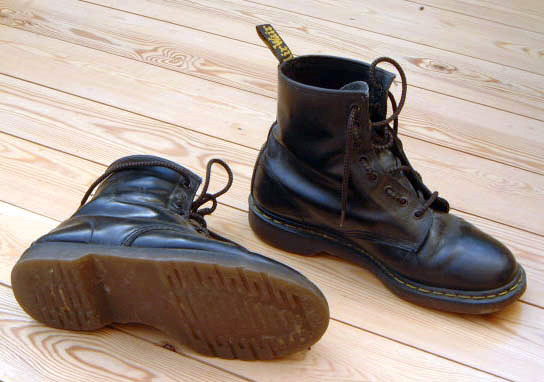

Kunsten å trekke seg selv opp etter støvelstroppene.

Dynamicland er et av de mest spennende prosjektene i moderne tid. Dynamicland er en datamaskin som lever i et rom, ikke bak en skjerm. Kameraer i rommet lar maskinen se. Projektorer i rommet lar maskinen vise.
Hva lager man først når man har et sånt prosjekt?
Svaret til Bret Victor var nok til at vi kan trekke oss selv opp etter støvelstroppene. I fysikken er det løftet vanskelig å få til. Men teknologien er rar, plutselig kan vi bruke systemet vi har laget til å lage mer av systemet.
Kildekoden til Dynamicland ligger som fysiske kort i permer langs den ene veggen. Skal kilden endres, tas kortet ut, og man erstatter med et annet kort. Skal systemet forklares, tar man fram kortene.
Når systemet selv kan brukes til å støtte videre utvikling av systemet, har man nådd et kritisk punkt. Man har lykkes. Og man har fått en fantastisk mulighet til å styre utviklingen av systemet videre.
Å klare å trekke seg selv opp etter bukseselene krever disiplin. Du kan ikke trekke for tungt. Hvilken lille bit av systemet kan du starte med?
Bootstrapping gir den samme følelsen av dybde som å bygge huset du selv skal bo i. Bootstrapping kan forankre og skjerpe samarbeidet til koderen og designeren.
Men følelsen av å bygge verktøyene du selv kan bruke videre mangler fullstendig fra dagens skole. Elevene lærer fakta. De lærer å skrive og lese. Supert! Og dette lærte vi bort på et helt fint vis, også for 30 år siden. Verden har endret seg på 30 år. Ny teknologi har endret vår relasjon til verden og til hverandre. Men vi bruker teknologien. Vi bygger den ikke.
I min drømmeskole hadde vi lært oss å lage teknologien vi bruker selv. Steg for steg bytter vi ut verktøy vi har fått fra andre med verktøy vi har bygget selv eller tilpasset fra et utgangspunkt. Når vi har råd til å putte superdatamaskiner i alle bukselummene, bør vi også selv ta tak i våre egne støvelstropper, i stedet for å blindt hekte oss på noen andres reise.